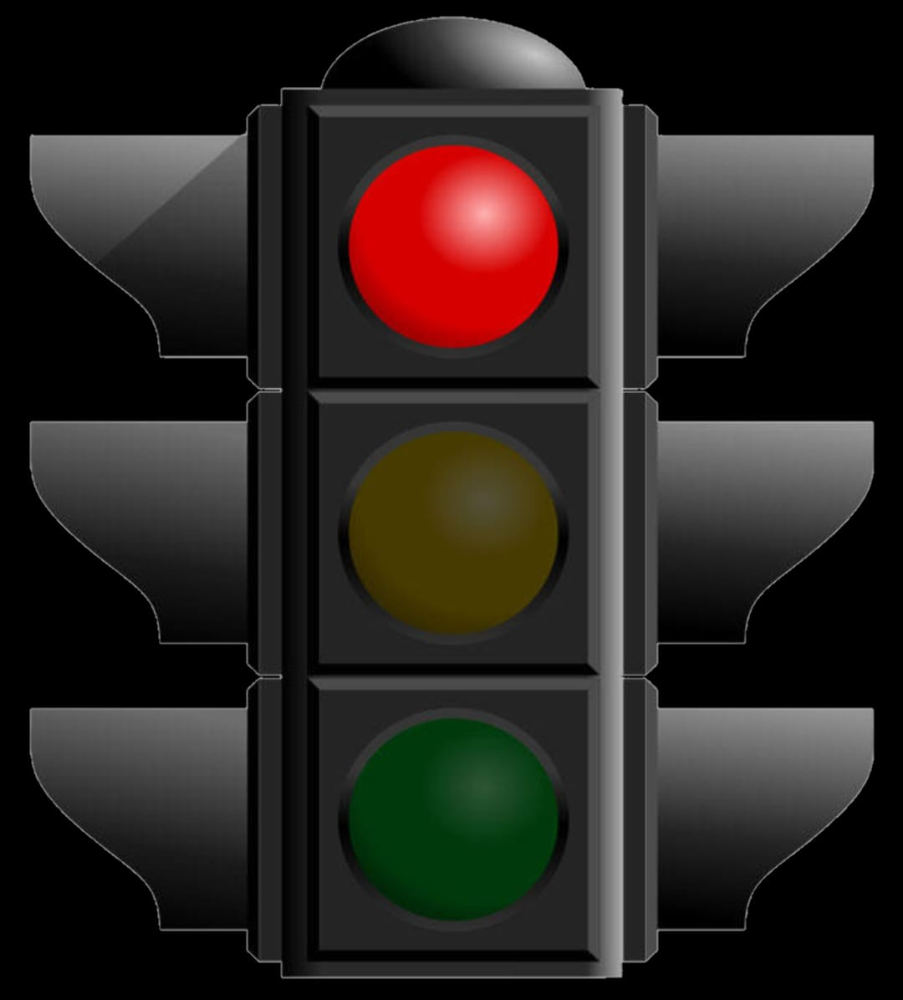
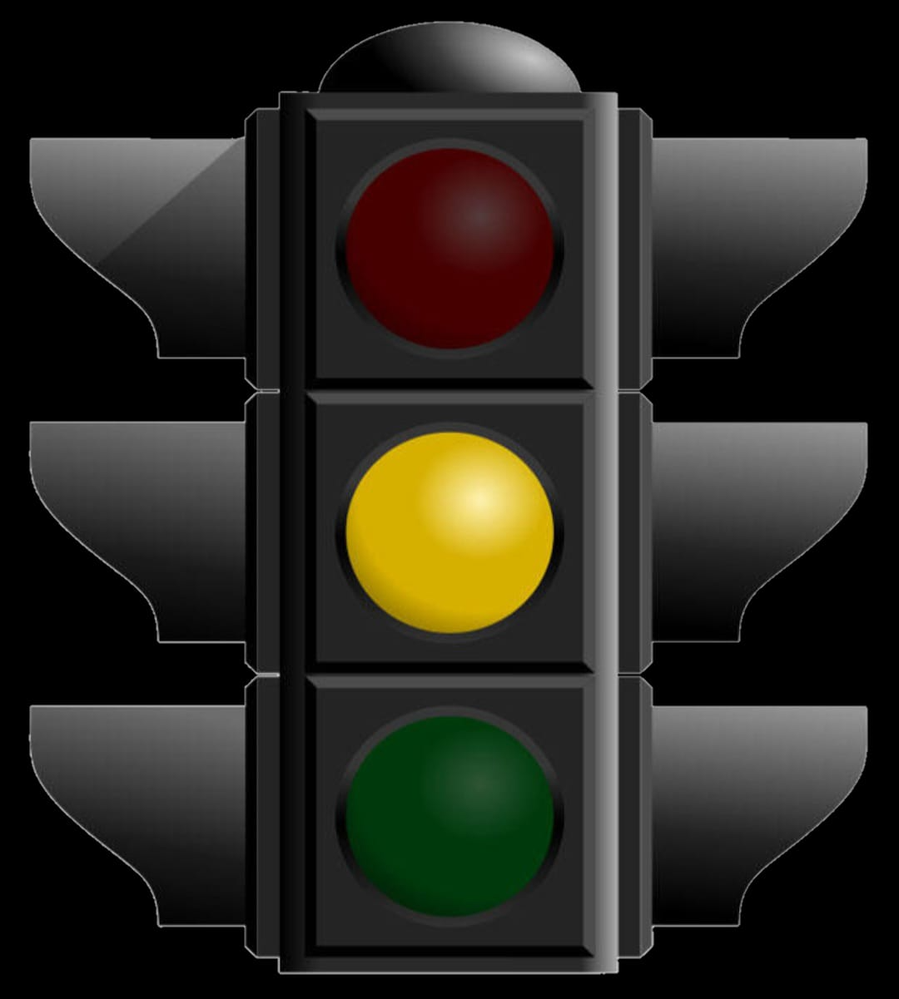
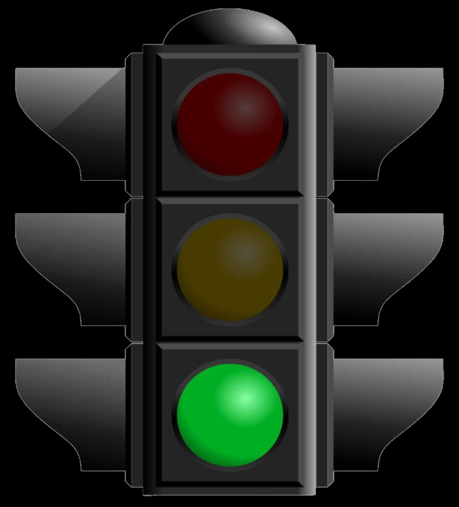
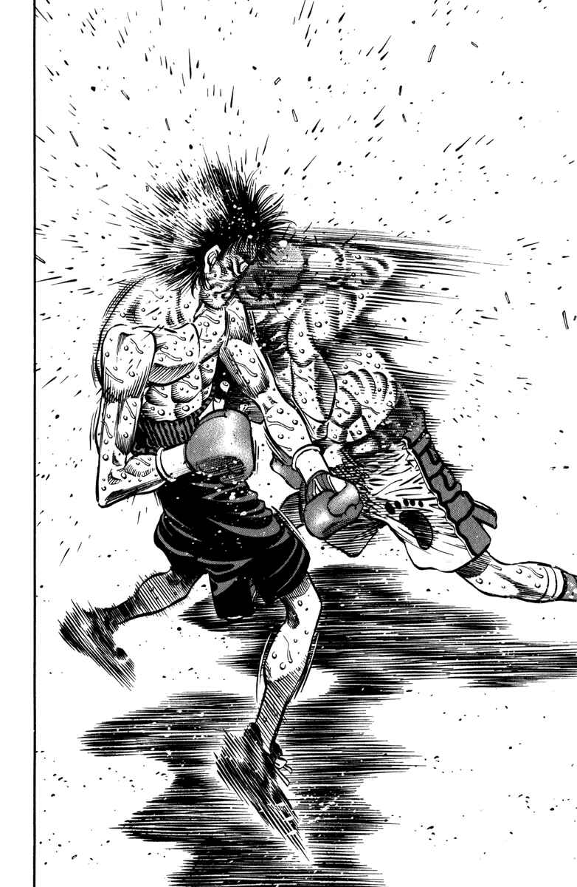

- MINHAS LISTAS FAVORITAS -
Lista com regras para BOM COMPORTAMENTO
- Agir com educação
- Ajudar os necessitados
- Promover a inclusão
Lista com meus EMOJIS PREFERIDOS
Lista explicativa sobre os SINAIS de TRÂNSITO
-  Sinal VERMELHO:
- Indica aos condutores de veículos que devem aguardar sua vez de prosseguir, permitindo passagem aos pedestres.
-  Sinal AMARELO:
- Indica aos condutores de veículos que devem ter atenção, pois sua vez de seguir está próxima.
-  Sinal VERDE:
- Indica aos condutores de veículos que têm permissão para seguir adiante.
Lista de eventos do confronto MAKUNOUCHI IPPO vs. KOJIMA HISATO
-

A RAZÃO DE ELE SER BOCUDO
- Minutos depois do soar do gongo, Ippo finalmente começa a se mover;
- É revelado as intenções de Kojima de vencer a luta com um counter;
- Alheio as intenções do adversário, Makunouchi avança.
-
O PADRÃO DE EXCELÊNCIA vs O COUNTER DESESPERADO
- Já no alcance dos golpes, Kojima faz uma finta e força Ippo a entrar no seu padrão de movimento;
- O campeão peso-pena desvia e força uma aproximação para devolver o golpe, mas é atingindo pelo adversário.
-
UM CRÍTICO GOLPE DE MESTRE
- O counter pega em cheio, Kojima começa a sorrir com a ideia de tomar o título de campeão para si;
- Enquanto lembra dos amigos que foram menosprezados pelo lutador a sua frente, Ippo começa a perder a consciência;
- Porém, a imagem do seu estimado treinador lhe dá forças para resistir a queda, ao mesmo tempo que desfere um ataque poderoso.
-
SOBREVIVENDO A MÚLTIPLOS GOLPES
- A rapidez de Makunouchi não permitem a Kojima armar a guarda ou se esquivar, que sem opções, aposta em aguentar o impacto;
- O ataque destrutivo do campeão acaba com todas as esperanças de Kojima, que vence a luta com um golpe só;
- Makunouchi Ippo, mesmo vitorioso, deixa o ringue completamente desolado.
Todos os direitos reservados: Francisco José PRODUCTIONS©